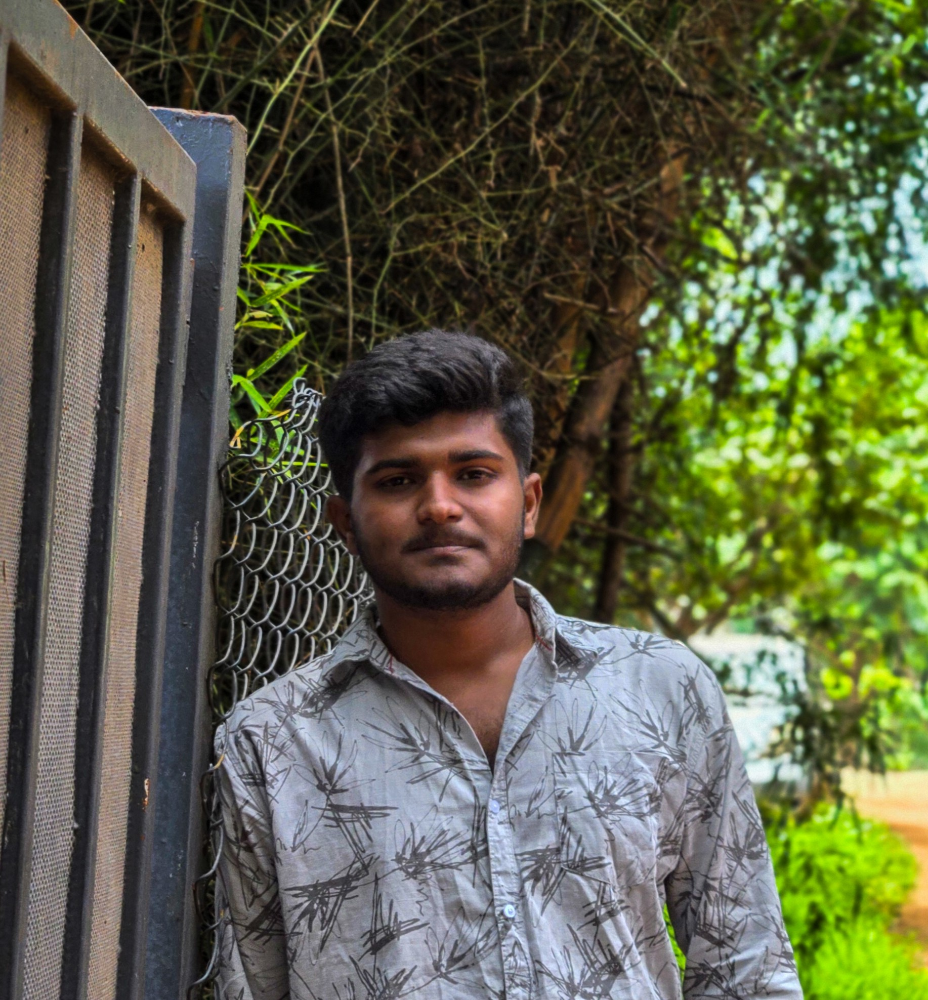

Video Editing▶
Cinematic edits, reels, and visual storytelling.
EditingStorytellingColour & mood
Hey, I'm Abhilash — a BCA student with a creative side. I enjoy video editing, cinematography, digital design, social media content, and building web experiences. I'm exploring how technology and visual storytelling can work together to create memorable things.

A student building a future at the intersection of technology, design, and visual storytelling.
BCA · Third year · Student & digital creator
I'm currently pursuing my third year of Bachelor of Computer Applications (BCA) at Swamy Vivekananda Rural First Grade College. I completed my PUC at Swamy Vivekananda Rural Pre-University College.
Alongside my studies, I'm interested in video editing, cinematography, UI/UX design, digital marketing, social media content, and web development. I enjoy creating cinematic visuals, exploring design ideas, and building web pages that look clean and work smoothly.
I've also taken part in technical and creative college events, including winning first place in Hardware Assembly at Login 2K25 and Login 2K26. I'm focused on learning through practice, improving my communication, and turning ideas into finished projects.
Cinematic edits, reels, and visual storytelling.
Camera movement, composition, lighting, and atmosphere.
Clean layouts, visual hierarchy, user flows, and usability.
Building responsive pages and publishing projects online.
Digital content ideas, social presence, and audience engagement.
Creative concepts, short-form videos, and publishing content.
Working with people, collaboration, and clear communication.
Completed Advanced Excel training with an A+ grade.
A live web project demonstrating front-end page building and visual presentation.
A growing collection of cinematic edits, reels, GTA cinematics, and visual experiments focused on mood and storytelling.
Interface ideas, landing pages, and responsive layouts built while exploring user experience and visual design.
Selected achievements and completed training, recorded as text rather than certificate images.
Secured second place at the national-level IT fest organised by the Department of Computing and Basic Sciences in association with IQAC, Christ College of Science and Management, Alambady, on 6 March 2026.
Secured first place at the national-level IT fest organised by the Department of Computing and Basic Sciences, IQAC, Christ College of Science and Management, Alambady, on 20 March 2025.
Completed Advanced Excel and soft-skill training through UpTaught Institute, associated with Swamy Vivekananda Rural First Grade College. Certificate dated 7 October 2024.
Secured first place at a national technical symposium hosted at M.G.R. College, Hosur, in 2025.
got jury award in the Annual Desh Apnayan Awards 2025–26, recognising active citizenship.
Building a foundation in computing while exploring the creative side of technology.
Swamy Vivekananda Rural First Grade College
Third year · In progress
Swamy Vivekananda Rural Pre-University College.
Explore my social profiles for creative posts and videos. YouTube can be connected once the channel URL is added.
Open to creative collaborations, student projects, and opportunities to learn, create, and grow.